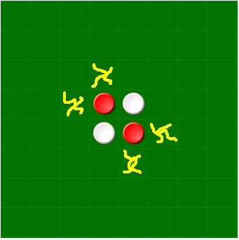

Well, let us start with giving the general idea of the game.
The idea is to (well, win obviously) capture your friend's pieces by surrounding them.
Claiming the opponent's pieces.
You need to have two of your pieces in a straight line (horizontal or vertical). The opponent's pieces that are in the middle of the one you have just placed and a previously placed counter of yours will turn his/her counter(s) the same colour as yours.

You must capture each time. If you are unable to capture any of your opponent's pieces, then your go will be passed, and it will be your opponent's turn again.
Be careful with the corners! Don't let your opponent put their counter into a corner. This could change the game around completely. Corner counters cannot be changed, as you cannot make straight lines. Try to get the corner pieces first.
The scoreboard at the bottom...
| Name | Meaning |
| Players | You and your opponent's names. |
| Color | Your colour, and your opponent's colour. |
| Game points | The amount of points that player has this round (the amount of counters that this player owns). |
| Games won | The amount of games this person has won. |
| Total points | The amount of points this player has had since the applet started. |
I hope this guide has made it easier for you to understand the game. Of course,
another thing to help you get good at any game is to PRACTISE.
This guide has been brought to you by: bno
I would also like to thank everyone who has made this game possible with MSN. THANKYOU